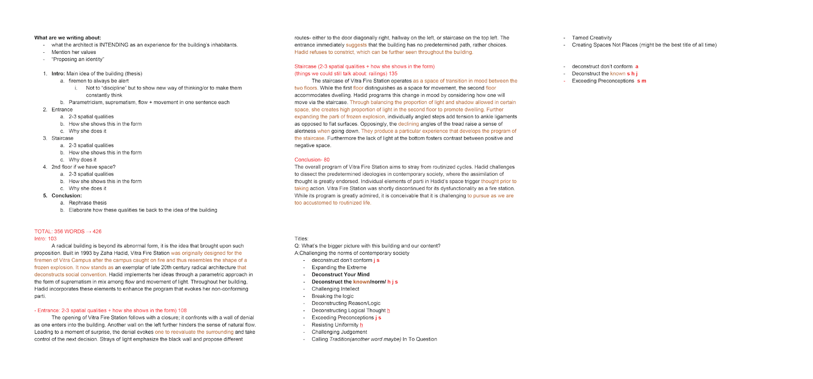
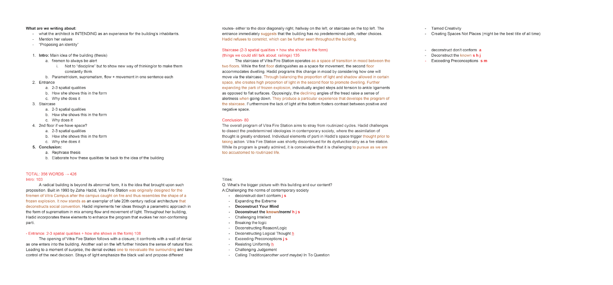

deconstruct your mind
Decontstruct Your Mind was a case-study to understand the relation of architect and architecture in context. In 1-week, each group had to build a physical model and compose an article in 11x17 poster. Vitra Fire Station by Zaha Hadid was the case of our project, and I was in charge of content strategy and writing.
01 / 02 >
2018.03.xx
context: 1-week case study
contribution: content strategy, writing
team members: Maggie Chan, Jinlin Li, Hammad Jawaid, Alex Lazimir
problem + limitation
The main limitation for the project was insufficient time with general scope. The project did not assign any areas to focus, therefore it was entirely up to us to decide on content strategy and complementing art direction.
role
In a team of 5, I was in charge of content strategy and writing. First, I researched about Zaha Hadid and her architecture before strategizing my content to grasp the general idea. I began by listening to her interviews, biographies, and scholarly reviewed articles that gears towards to structures that Hadid directly worked on, to learn Hadid’s personal aesthetic. Then I narrowed down the scope to topics that are specific to Vitra Fire Station. After research, I wanted to organize the sections in article to which those who visit the Vitra Fire Station would experience the space for the reader to imagine throughout the article.
In order to visually communicate the concept, I worked closely with the art director to create the moodboard. Our art direction intended to promote Hadid’s non-conforming ideology and geometrically bold approach. Therefore we decided to experiment with a diagonal composition to enhance the non-parallel form by utilizing the aspects of suprematism in geometric shapes and minimal embellishments.
result
Despite the limitation of short time period, the project turned out quite successfully. The project received the highest mark in the class for creating a complementing graphic design and in-depth content.
 
